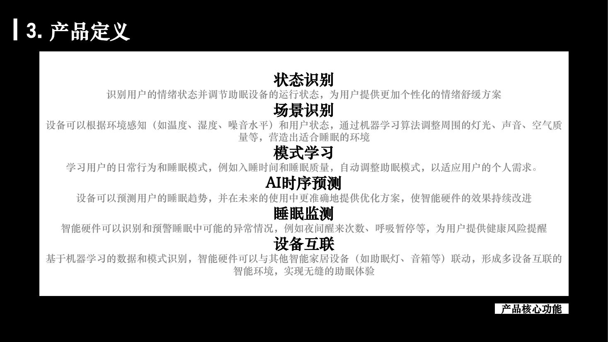
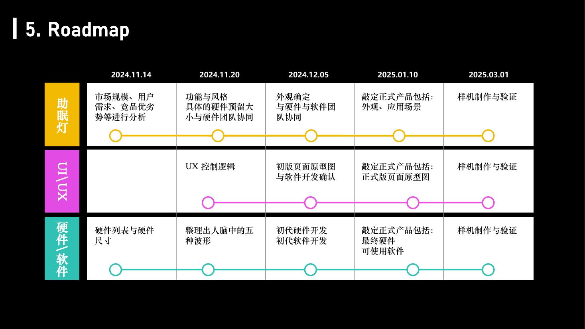
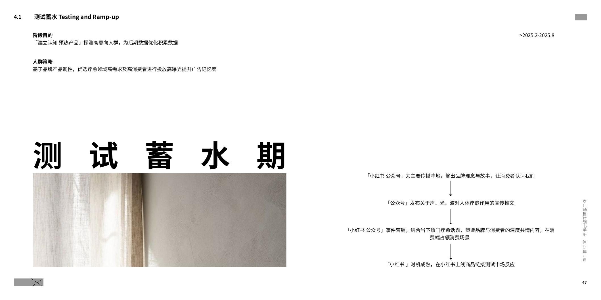
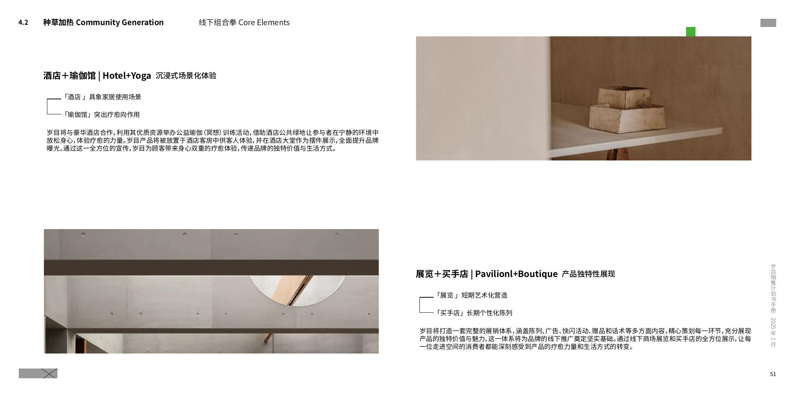
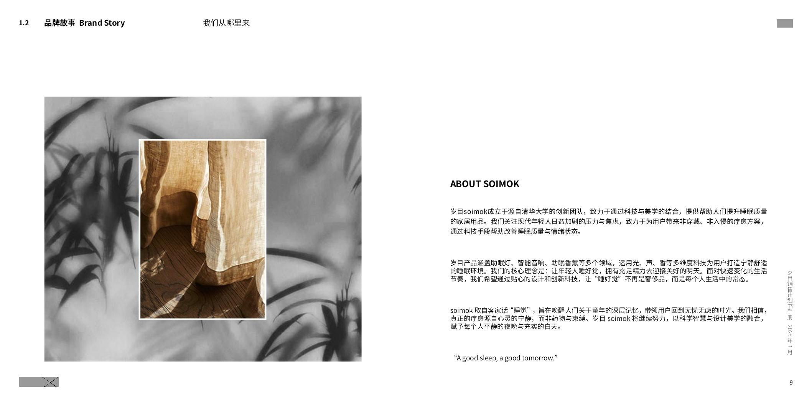
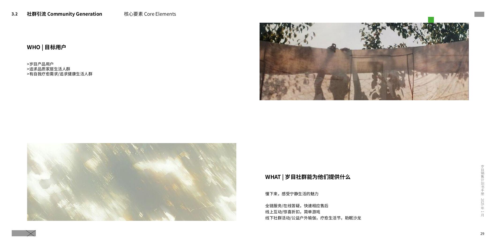

测试蓄水
验证品牌叙事、人群与内容方向，识别高意向用户。
- 小红书与公众号内容
- 品牌理念与声光知识
- 小范围产品链接测试
一盏放在床头、会呼吸的助眠灯。我们尝试用低干扰的声光调控，帮助年轻人在睡前从紧绷切换到安静。
“我知道自己睡不好，却不知道应该改变什么。”
不少用户无法判断睡眠问题的成因，专业指标也很难直接转化为行动。
对第二天工作和生活压力的担忧，会进一步放大入睡前的焦虑。
用户普遍更接受非接触式方案，也更愿意先改善声、光与整体入睡环境。
专业信息很多，但用户仍难以判断自己当下的状态。
首页优先呈现状态信息，再允许用户逐层查看专业指标和趋势。
Luune 的核心不是让用户睡前继续盯着屏幕，而是通过床头设备感知与调节环境。声光系统负责营造节律和氛围，App 将监测结果翻译成用户可以理解的状态反馈。
以非穿戴、低打扰的方式进入卧室，通过光与声音构建稳定的入睡环境。
保留睡眠时长、阶段与趋势等专业信息，同时降低指标堆叠带来的理解成本和焦虑。


策略从“床头一盏灯”的真实场景出发：先在用户已经愿意放松、休息或关注生活品质的空间里建立体验，再通过内容和社群延长关系，最后推动高意向用户转化。
验证品牌叙事、人群与内容方向，识别高意向用户。
围绕真实体验场景建立产品记忆，回访已经产生兴趣的人群。
聚焦高意向人群，根据反馈优化内容、投放和产品组合。
把产品放回最自然的睡眠场景，让差旅用户完成一晚体验，再通过同款购买延续到家。
通过艺术化陈列表达设计师品牌定位，让产品的光、声音与空间效果可以被直观看见。
连接已有放松需求的人群，通过冥想、恢复和社群活动验证生活方式语境。
用睡眠知识、产品共创和日常疗愈内容承接线下体验，让一次接触变成持续关系。


品牌语言围绕“宁静科技”展开：技术不需要不断提醒自己的存在，而是在关键时刻提供温和支持。视觉与内容因此选择自然材质、低刺激光线和留白，让体验与产品价值保持一致。


我加入时，项目处于产品与品牌从零建立的阶段。离开时，产品已经在众筹平台获得 200+ 份订单。
项目也获得了外部投资。众筹结果与融资均为阶段成果，两者并列呈现，不建立因果关系。
睡眠信息越专业，越需要清楚说明它对当下状态意味着什么。
床头产品的价值需要在真实环境中被感知，因此酒店、疗愈空间和设计零售比单纯曝光更接近有效验证。
从灯光、声音到内容和空间，所有接触点都需要传达一致的低干扰感。